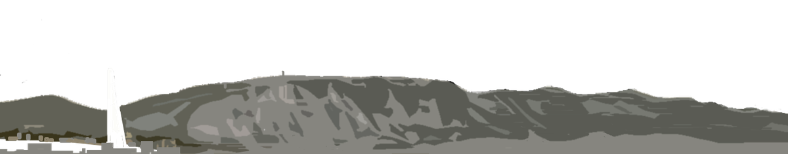

.
Bienvenue
► Welcome
► Willkommen
► Benvenidos
Tous les dimanches, les amoureux de randonnées pédestres se donnent rendez-vous à 10h00 au terminus du bus 8 à Veyrier-Douane , à 100 mètres de la douane côté Suisse. Un responsable de l'Association Genevoise des Amis du Salève (AGAS) vous y attend par tous les temps. Il n y a pas d'inscription préalable.
Il faut absolument une bonne condition physique et de bonnes chaussures (pas de nu-pieds, tongs, etc!)
Le Salève est une vraie montagne, où la prudence s'impose.
Emportez suffisament d'eau car il n'y a pas de sources le long des sentiers.
Prenez aussi un chapeau et crème solaire, un ou deux bâtons si vous en avez, une veste imperméable, crampons en hiver si glace, passeport, argent, et un pique-nique.
Départ à pied du point de RDV. Suivant le nombre de guides bénévoles présents, plusieurs itinéraires pourront être proposés. Selon le circuit choisi, comptez 4-6 heures de marche, dont 2-3 heures de montée à un rythme soutenu (au moins 800 mètres de dénivelé). Possibilité de descendre en téléphérique.
Parfois nous organisons un rendez-vous supplémentaire pour explorer le sud du Salève, loin du téléphérique. Ces sorties sont réservées aux randonneurs initiés qui ont déjà marché avec nous. Les détails sont confirmés ici 1-2 jours avant, selon la météo.
Merci de lire le document concernant nos prescriptions internes.